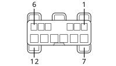

H005A STEERING COLUMN SWITCH UNIT (FRONT)
- Path
- Electrical equipment > 3 CONNECTORS > H MANUAL ELECTRIC CONTROLS > H005 STEERING COLUMN SWITCH UNIT > H005A STEERING COLUMN SWITCH UNIT (FRONT)
- Kind
- connector pinout (pin -> wire colour -> other end)
- Applies to
- all engines; all production periods
- Interactive page
- https://sloeber94.github.io/elrnDB-aBrrSpdr/en/#/946000730
Applies to: all engines; all production periods

Wiring | Colour |
|---|---|
BIANCO (white) |
Pin | Cable | Destination | |||
|---|---|---|---|---|---|
Sec.. | Colour | Node | Connect. | Pin | |
2 | SR (pink with red stripe) | X | 25 | ||
2 | |||||
3 | HR (grey with red stripe) | 1 | |||
5 | AR (light blue with red stripe) | 13 | |||
6 | BS (white with pink stripe) | 3 | |||
7 | 2.5 | N (black) | 15 | ||
8 | 2.5 | C (orange) | 1 | ||
9 | 2.5 | BR (white with red stripe) | 2 | ||
10 | 2.5 | V (green) | 1 | ||
11 | 2.5 | G (yellow) | 10 | ||
12 | 2.5 | A (light blue) | 2 | ||
Topics linked from this page (8)
- 12 FRONT
- B002A JUNCTION UNIT UNDER DASHBOARD (FRONT)
- C010 LEFT FRONT EARTH
- M001A BODY COMPUTER (FRONT)
- M001B BODY COMPUTER (FRONT)
- N015 WINDSCREEN WIPER MOTOR
- N022 WINDSCREEN WASHER/ REAR WINDOW WASHER PUMP MOTOR
- P090 ALARM SIREN
Topics that link to this page (16)
- B002A JUNCTION UNIT UNDER DASHBOARD (FRONT)
- B002A JUNCTION UNIT UNDER DASHBOARD (FRONT)
- B002A JUNCTION UNIT UNDER DASHBOARD (FRONT)
- B002A JUNCTION UNIT UNDER DASHBOARD (FRONT)
- B002A JUNCTION UNIT UNDER DASHBOARD (FRONT)
- B002A JUNCTION UNIT UNDER DASHBOARD (FRONT)
- C010 LEFT FRONT EARTH (FRONT)
- C010 LEFT FRONT EARTH (FRONT)
- C010 LEFT FRONT EARTH (FRONT)
- M001A BODY COMPUTER (FRONT)
- M001A BODY COMPUTER (FRONT)
- M001B BODY COMPUTER (FRONT)
- M001B BODY COMPUTER (FRONT)
- N015 WINDSCREEN WIPER MOTOR (FRONT)
- N022 WINDSCREEN WASHER/ REAR WINDOW WASHER PUMP MOTOR (FRONT)
- P090 ALARM SIREN (FRONT)